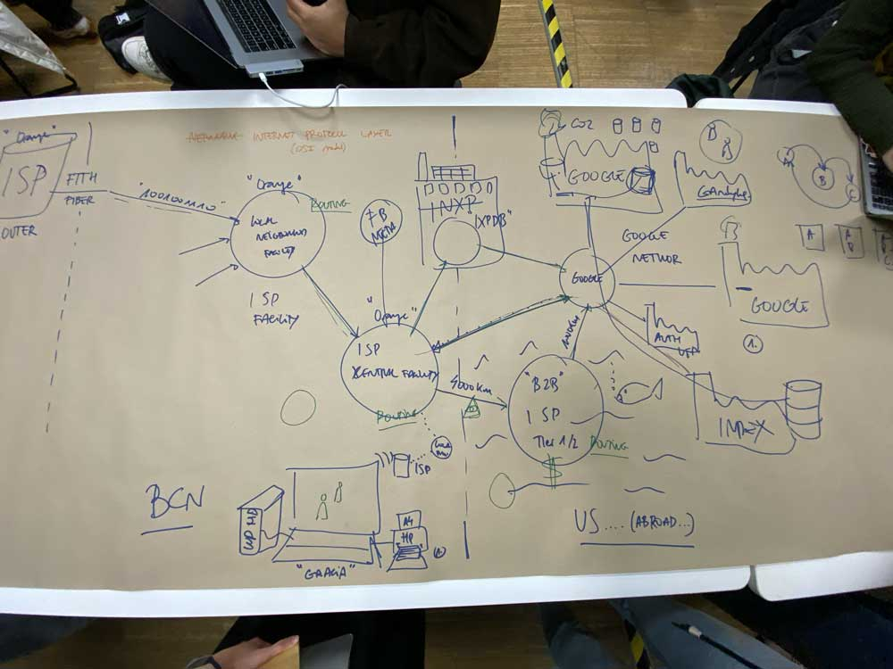
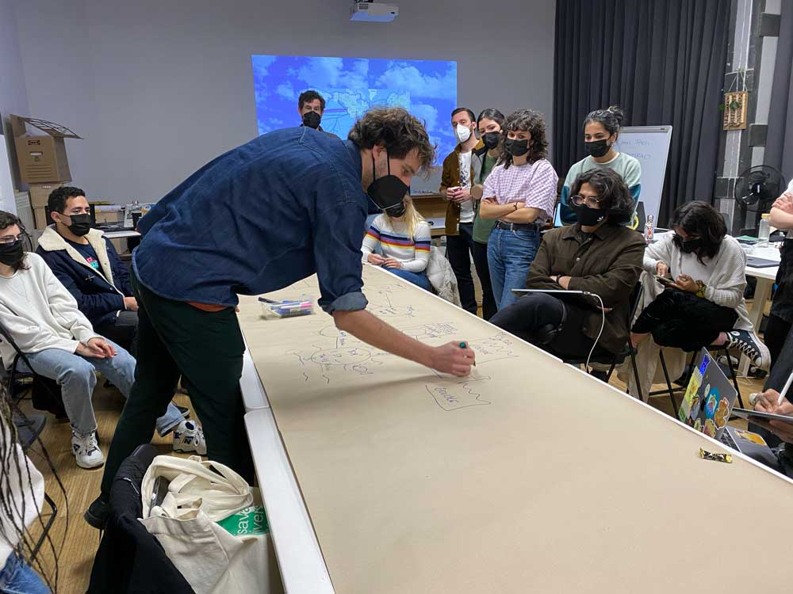
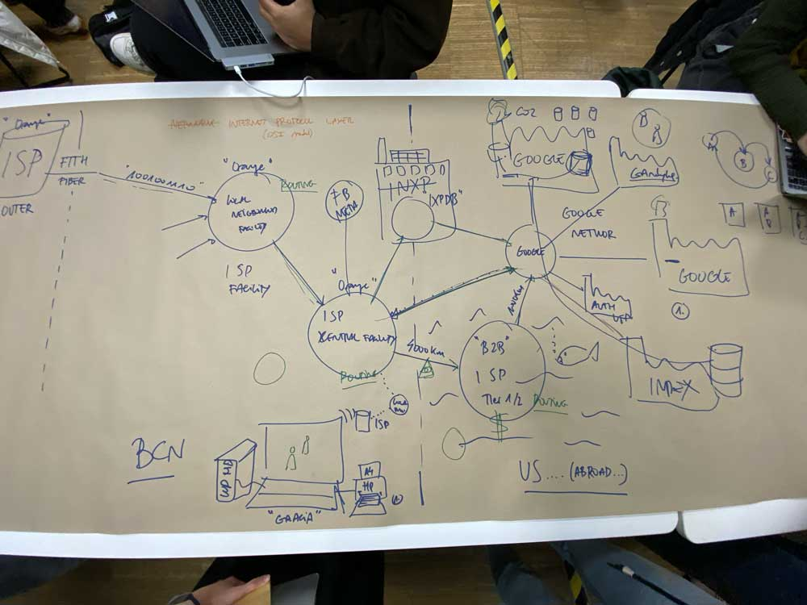
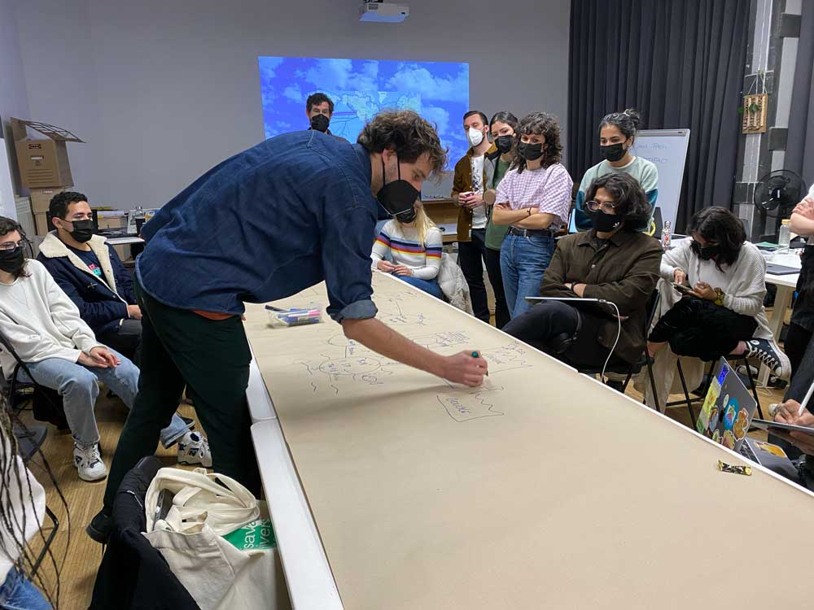

🗓 March 2022
The important lesson is to understand the systems and intent behind technology and its key players. And through this understanding and awareness, be able to make decisions about how we use technology as designers from the start our design process and not as an afterthought. Because big tech's hold on today's society is overpowering and ubiquitous, we must be critical and aware of its colonizing effects. And be equiped with alternative approaches to technology.
With the visit of Lorenzo from Akasha Foundation, we learned a bit more about the start of Etherium. He spoke more about the culture of the people and the values behind the new currency framework. He introduced the functions of of Akasha Hub and Etherium World, and the values of decentralized interactions and technology, which we will learn more about in the final class.


Collective Intelligence
Following the tech track from Term 1, we started this class with the theme of opening the black box and demystifying big tech. We started by looking into all of the actions and components that go into a common daily technology like using the search engine on the internet. Although I had some basic knowledge of this technology, it was amazing (as we started to map out the components) how complicated and dependent this process is. Also as we started unveiling the key players (big tech and other companies) who have stakes in this process, it became more apparent the greater implications of our simple daily actions using the internet.The important lesson is to understand the systems and intent behind technology and its key players. And through this understanding and awareness, be able to make decisions about how we use technology as designers from the start our design process and not as an afterthought. Because big tech's hold on today's society is overpowering and ubiquitous, we must be critical and aware of its colonizing effects. And be equiped with alternative approaches to technology.
With the visit of Lorenzo from Akasha Foundation, we learned a bit more about the start of Etherium. He spoke more about the culture of the people and the values behind the new currency framework. He introduced the functions of of Akasha Hub and Etherium World, and the values of decentralized interactions and technology, which we will learn more about in the final class.

